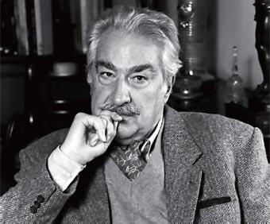

Julio Verne

(Jules Verne; Nantes, 1828 - Amiens, 1905) Escritor francés considerado el fundador de la moderna literatura de ciencia ficción. Predijo con gran precisión en sus relatos fantásticos la aparición de algunos inventos generados por los avances tecnológicos del siglo XX, como la televisión, los helicópteros, los submarinos o las naves espaciales. La vida de Julio Verne es aparentemente una sucesión de decisiones sensatas: estudió derecho siguiendo la tradición familiar, contrajo matrimonio con una viuda rica, logró una posición acomodada y sólo cuando su arrollador éxito se lo permitió se dedicó en exclusiva a la literatura.
Álvaro Mutis
Álvaro Mutis Jaramillo. (Bogotá, 25 de agosto de 1923 - Ciudad de México, 22 de septiembre de 2013). Poeta, novelista y periodista colombiano. Cursa sus primeros estudios en Bruselas. Posteriormente se traslada a Bogotá y vive desde 1956 en México, donde alterna la escritura con trabajos en diversas empresas. Los recuerdos de su infancia en Bélgica marcan uno de los principales temas de su obra, el contraste entre Europa y América. A principios de los 40 comienza a trabajar en la radio, donde dirige un programa dedicado a la literatura y ejerce como locutor de noticias. Inicia su carrera literaria, influenciado por los escritores surrealistas, publicando sus primeros poemas y críticas en la revista Vida y en los suplementos literarios de los diarios El Espectador y La Razón. En 1947 publica su primer libro de poemas en colaboración con Carlos Patino, La Balanza.
Gabriel García Marques
Gabriel García Márquez fue un escritor novelista, cuentista, guionista, editor y periodista, Premio Nobel de Literatura en el año de 1982 y uno de los grandes maestros de la literatura universal. Nació en Aracataca (Magdalena), Colombia el 6 de marzo de 1927. Hijo de Gabriel Eligio García y de Luisa Santiaga Márquez Iguarán. Fue criado por sus abuelos maternos: Tranquilina Iguarán Cortés y el coronel Nicolás Márquez quien fue figura esencial en su vida, cuya personalidad influyó en varios de sus personajes. Fue conocido familiarmente y por sus amigos como GABITO. Gabriel García Márquez fue la figura principal del llamado Boom de la Literatura Hispanoamericana. Cursó estudios secundarios en el colegio Jesuita San José en el año de 1940. Después gracias a una beca otorgada por el gobierno fue enviado a Bogotá, donde lo reubican en el Liceo Nacional de Zipaquirá, población a una hora de la capital Bogotana culminando allí sus estudios secundarios. Después de su grado en 1947 permaneció en Bogotá, estudió Derecho y Periodismo en la Universidad Nacional de Colombia donde se dedicó especialmente a la lectura. Sus primeros años de infancia marcaron decisivamente su trabajo como escritor; toda esa riqueza de tradiciones transmitidas por sus abuelos inspiró buena parte de su obra. Su deseo de ser escritor crecía, publicó su primer cuento, La Tercera Resignación, el 13 de septiembre de 1947 en el diario el Espectador.
William Shakespeare
William Shakespeare nació en 1564, en la localidad de Stratford-upon Avon, Inglaterra. Su padre, John, era un fabricante de guantes; y su madre, Mary, era la hija de un granjero. Se asume que William probablemente estudió latín, griego e historia, y que abandonó la escuela cuando tenía 16 años. Muy joven, probablemente antes de tener 20, se casó con Anne Hathaway. Tuvieron tres hijos: Susana y los gemelos Hamnet y Judith. En algún momento antes de 1590 salió de Stratford y se fue a Londres, donde consiguió trabajo como actor, para luego empezar con su amor por la escritura. En 1593, la peste, una enfermedad terrible, mató a millares de personas y los teatros fueron cerrados. Durante este tiempo, William comenzó a escribir poemas cortos llamados sonetos. Shakespeare también ayudó a construir un nuevo teatro llamado The Globe, que se abrió en 1599 y tenía espacio para 3000 personas. Finalmente, Shakespeare se hizo rico y famoso. Falleció a sus 52 años, el 23 de abril de 1616.